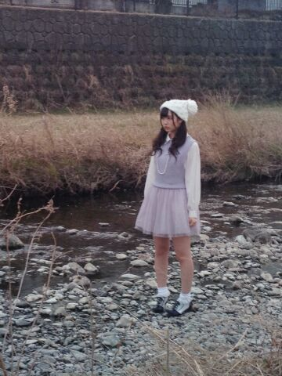
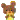

| 2014/03 06 Thu | ひめたん(*>ω<*)そ の415 |
季刊 乃木坂vo.1 早春
発売になりました( ´ ▽ ` )ノ


こんな感じですーにゃほ(＊^ω^＊)
ぜひチェックしてみてね♪
明日はお渡し会やでー 

今日はNOGIBINGO!2最後の収録でした
はやいなーとってもはやかったなあー
詳しいこととか総括は
最後のオンエアが終わってから。
カットされてませんようにーっと♪笑
どうでもいいけど今日の顔は
ひめたん史上最強の
コンディションの悪さだったなあ(´・ω・｀)
テストのせいにでもしておこうかな......
こればっかりは自分で調えなければ。
明日のNOGIBINGO!2は
またまたみなさんの大好きな
あの企画(ノ)ω(ヾ)てれー
恥ずかしいので
ひめたんは見たくないけど(ノ)ω(ヾ)
でもメンバーみんなかあいーので
みなさんは見てくださーい♪♪
それから！
NOGIBINGO! DVD-BOX
もうそろ発売やで！
ひめたんもゲットしたよー
初回版はステキな特典が盛りだくさんで
おもちゃ箱みたいでわくわくする(＊>ω<＊)
こちらも届いたよーって方は
感想お待ちしておりますっ
なんか告知ばっかでごめんねー(´；；｀)
だってだって
私生活と言ったら
ひめたんテストしかしてなくて
なんかかわいくないんだもん(´；；｀)
わーん(´；；｀)
そうですね、ひとつ言うなら
朝晩ジョギングとか
しようかなーなーんて
考えてるところですって報告かねー
でもね朝も夜も
今の季節お外が真っ暗でね
でも運動したい、そんな気分かしらね
マッサージも行きたい(ヾ(´・ω・｀)整体も

 じゃあ、若月といくちゃんの間を取って、
じゃあ、若月といくちゃんの間を取って、
俺にチョコをあげるということで
いいですかね？笑
じゃあってなんですかY(・∀・)Y
あいだなんて取らなくても
あなたにあげるに......決まってんじゃん。///
ひめたんは乃木坂１の焼き肉好きで
有名ですが、牛たん派？それとも豚たん派？
ちなみに僕はゆったん派です。
確かに好きだけども
ひめたんより焼肉好きな子は
いっぱいいるんじゃないかなーなんて思うけども
ひめたんはお肉に詳しくないので
違いもよくわからないんだけど
ひとつだけ言えることは
ゆったんのことは食べないでください割とまじで。
リンゴジュースは透明のと、
にごっているのは、どっちが好きですか？
断っ然っ
にごってるのが好き！
姫は、漫画などお読みになられるのですか？
姫は生駒たんとたーまーに
漫画を共有したりしますよー( ´ ▽ ` )ノ
ひめたんって口癖とかあるの？〜きゅん とか？
きゅん、かあ
ステキやねステキすぎるやね
けどねそーでもないのよ
無意味に話の前に「違うの！」って言う癖があって
ちまに「ん？何が違うのひめたん( ^ω^ )威圧」って
征されたりしますかねー
ちなみに何あげるの？
タルト？田楽？プディング？
あっ、ひめたん料理......
お願いその続きは言わないで
お願いその続きは言わないで
お願いその続きは言わないでーっヽ(；▽；)ノ
チョコもらうなら誰からもらいたい？
あなたから......。
ん？釣ってるとかゆーなし！ごら！
ん？あれ？地理強い？
確か以前 琵琶湖は岐阜県って
のたまってたことがあったような
なかたったような・・・
きっと 気のせいかな（笑）
あっらーさっすがひめきゅんさん
あんな昔の記事を
よくぞ覚えててくださいましたねー......
ひめたんはよくツインテールしてるけど、
どの高さが丁度いいとかあるのー?
これはステキな質問をありがとう
耳(・∀・)！
基本的にこの高さはマストですねー
おにゃーのこはぜひやってみてー
ひめたんのブログの
コメント欄下２ケタに46を踏んだ方へ
手書きでコメ返するコーナー
＼ ひめたん46 ／

いつもステキなコメントたくさん
ありがとうございます！
お勉強の息抜きになりまするっ
ひとりひとりとゆっくりお話したいなって
いつも読んでて思うのね(∩´∀`∩)
毎日正座して読んでます
ほんとかな？うそかな？どっちかなー？
(＊´・ω・＊)
コメント(492)
2014/03/06 23:58